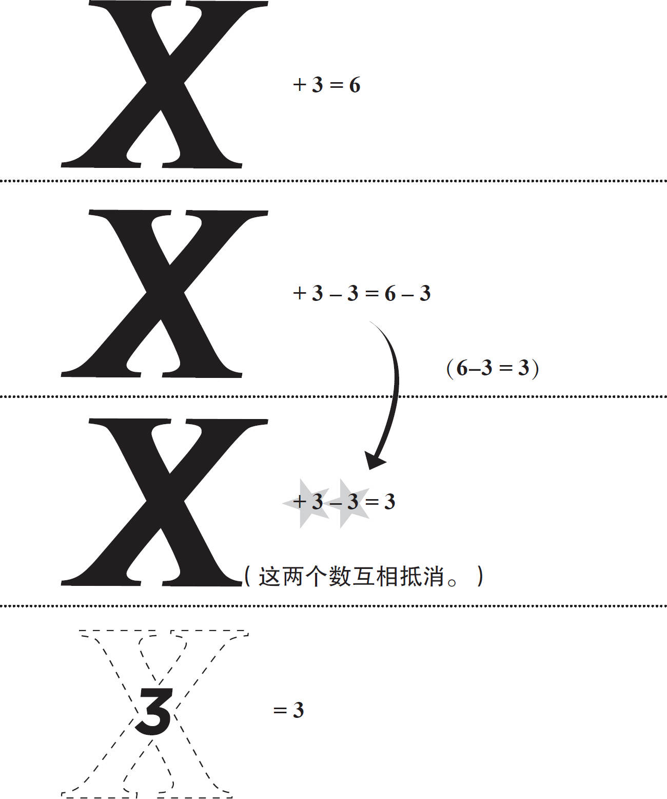

代数可以使用变量表示数学，简化计算。
■一个变量可以代表一个数字、一个人或一件事物，就像电影票的价格一样，根据电影的放映时间或类型（3D、IMAX巨幕电影）而变化。
小提示：由于字母x在代数中经常被用作变量，所以它不被用来表示乘法符号。当我们进行乘法运算时，我们可以在数字和变量之间放置一个小点，或者直接省略。[此书 分 享微 信jnztxy]
例如：4x 表示4乘以X 。
■方程式等号两边的值必须相等。
方程式 1＋3＝4，两边值的和都是4
你可以通过等式一侧的值来求解变量的值。
提示：如果要分离变量，只需要在等号的两边同时加上或者减去相同的数就可以了。
■用乘法、除法进行相同的运算。
■它的运算原理是：在方程x ＋2＝7中求解x ，从左边去掉常数2，使变量x 分离，同时为了等式相等，右边也要减去2，这样：
X ＋2＝7→X ＋2–2＝7–2
由于＋2-2相互抵消，剩下的是x ＝5。
■当等式两边都有变量时，可以像常量一样处理变量，在等式两边增减变量就可以了。
例：
X ＋3＝2X
X ＋3＝2X
X –X ＋3＝2X –X
3＝1X
（或X ＝3）
■代数变量演示
